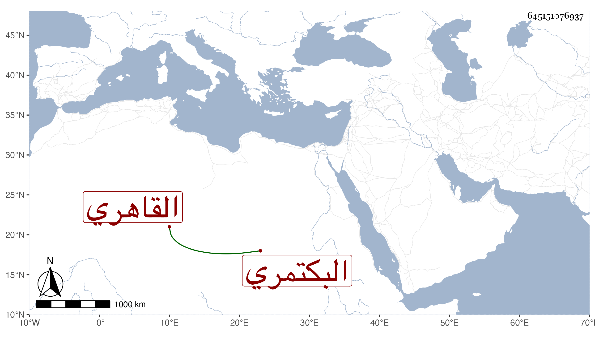

0902Sakhawi.DawLamic.ITO20230111-ara1.EIS1600.645151076937
Biography ID: 645151076937
578
أحمد بن محمد بن يونس بن محمد بن عمر الشهاب بن المحب بن الشرف البكتمري القاهري شقيق يحيى وعبد الرحمن الآتيين وأبوهم وعمه سيف الدين وجدهم لأمهم الزين قاسم بن قطلوبغا الحنفي . ولد في شوال سنة إحدى وستين وثمانمائة وسمع على أم هانئ جدة أبيه واشتغل قليلا وسمع مني .
